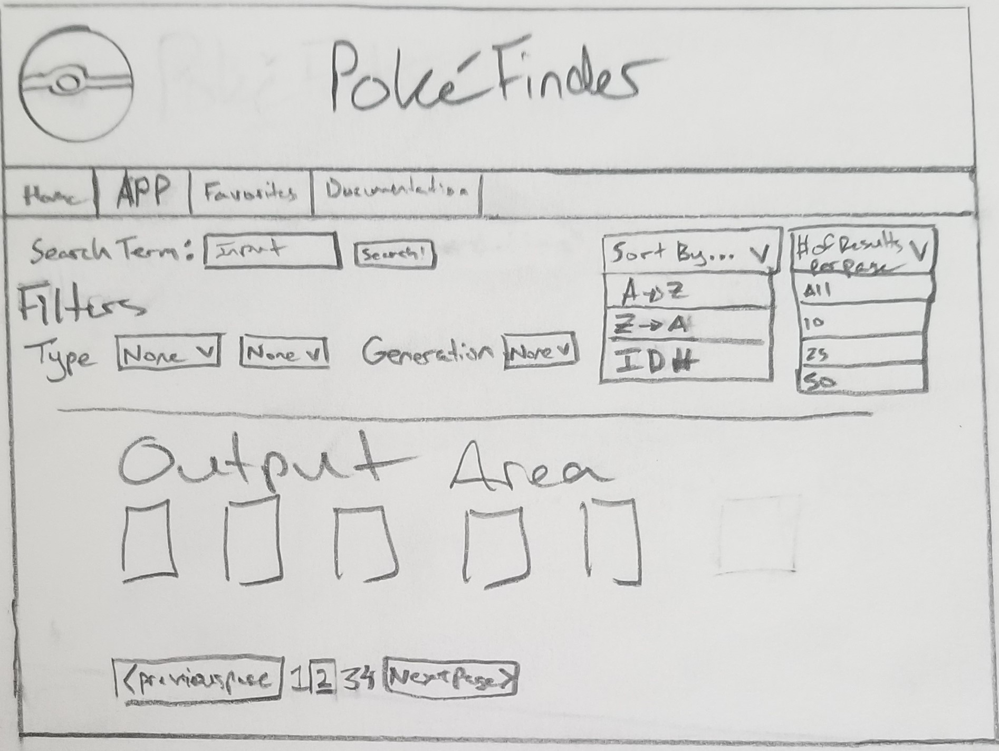

Project Requirements
API Used

- PokeAPI Docs
- Endpoint(s):
- https://pokeapi.co/api/v2/pokemon/
- https://pokeapi.co/api/v2/generation/
Resources
- Other Pokemon JSON Data
- Pokemon font
- IBM Plex Sans Thai Looped font
- Bulma Documentation
- Columns
- Tiles
- Forms
- Cards
- MDN Web Technology References
- Web Storage API
- Window.localStorage
- Array.prototype.reverse()
- Array.prototype.sort()
- String.prototype.replace()
- Document.activeElement
- IGME-235 Local Storage tutorial
- W3Schools HTML Input Types Reference
- StackOverflow: How can I convert a string to boolean in JavaScript?
- JSDoc Resources
- JSDoc Documentation
- JSdoc Cheatsheet
Proposal
- Search term field that takes in a Pokemon name or part of a name
- Sort By pulldowns
- A -> Z
- Z -> A
- ID Number
- Filter By pulldowns
- Type(s)
- Generation
- Number of results per page selector
- Results pagination

Noteworthy
- Created custom search function with filters
- Ability to sort favorites on favorites page as well as delete individual favorites
Grading
Grade: 85
Requirements Met
- Web components present
- Pokemon result card
- Header
- Footer
- Navbar
- App functions and fails with user notifications
- App saves and loads UI state
- Favorites page uses local storage to store favorites with the ability to add and delete individual favorites
- Global navigation system
- Uses Bulma CSS
- Valid HTML and CSS
- ES6 modules used
- Coding conventions and standards followed
Above and Beyond
Although there is much that can be improved, I believe that I showed enough effort depsite the handful of drawbacks that set my progress back a bit (ie: almost losing the flashdrive). I also had to find some new data sources to make the app run properly and quickly, thus forcing me to restructure my code quite a bit. Overall, while not perfect, I would say that the work I did in combination with the outcome merits me at least a B.
To Do
- Add pagination
- Rebuff the filters so that if two types are selected, only pokemon with exactly those two types are shown
- Add ability to show megas and variants
- Redesign the community page and add number of favorites to the results
- Buff the design for all pages so that they look even nicer